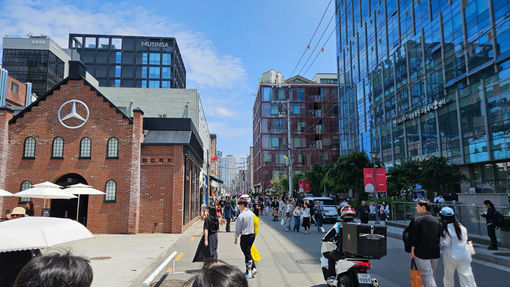
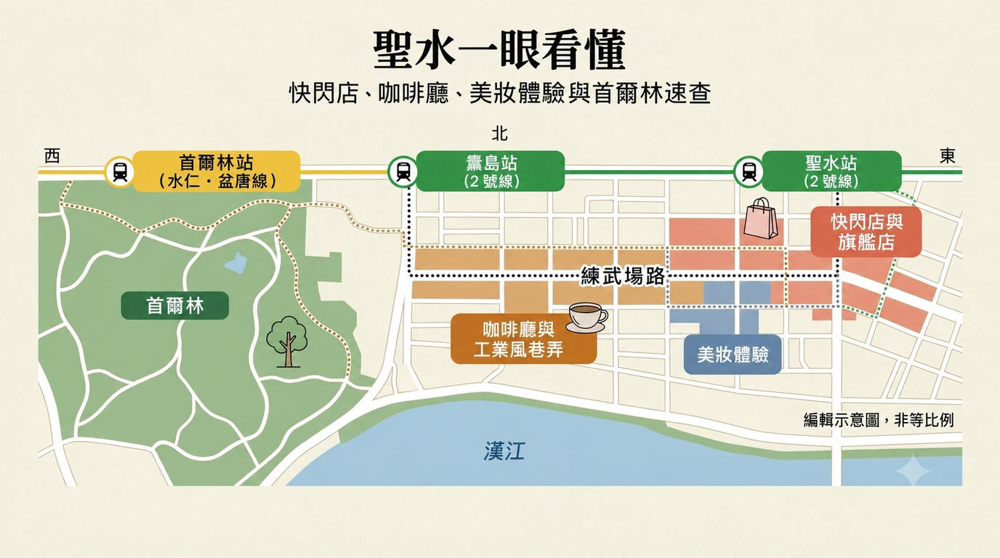
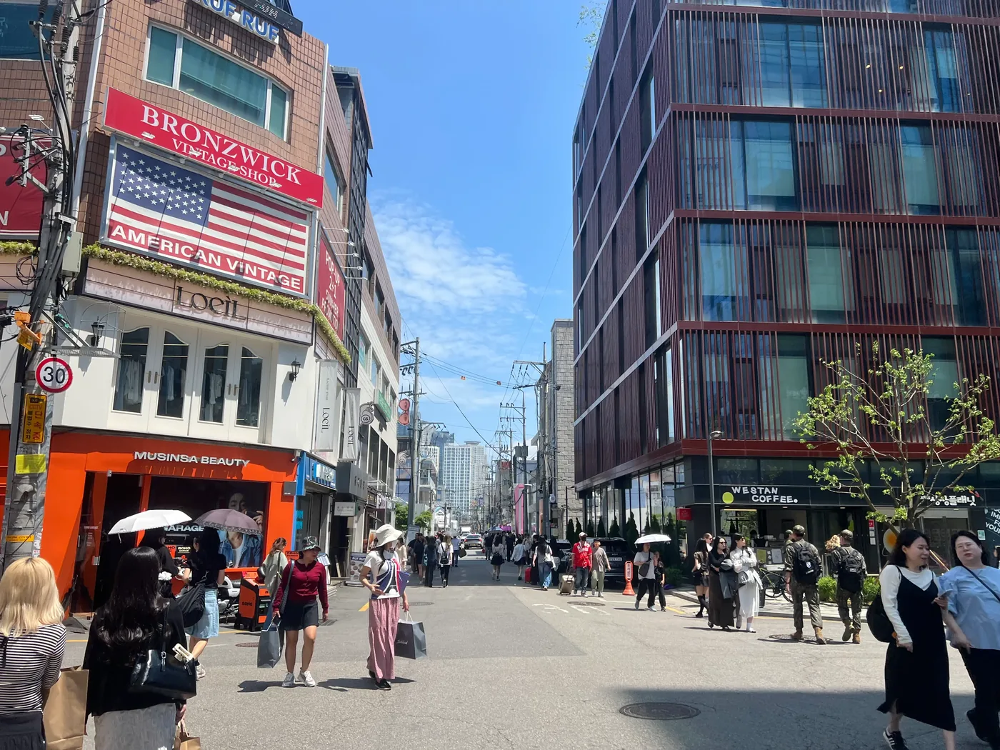
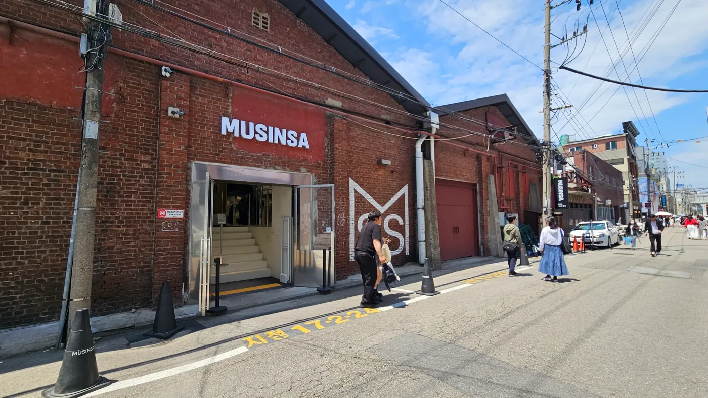
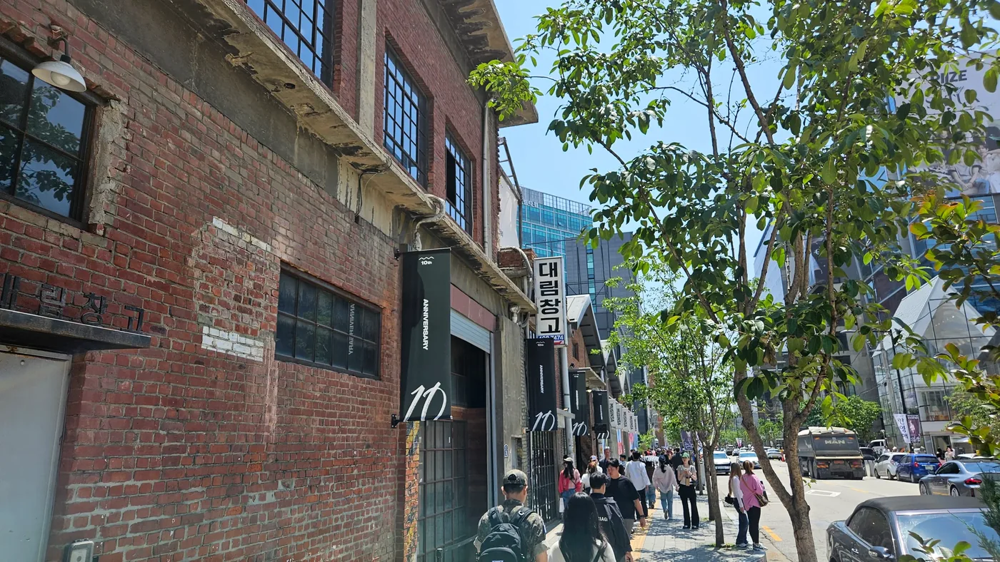
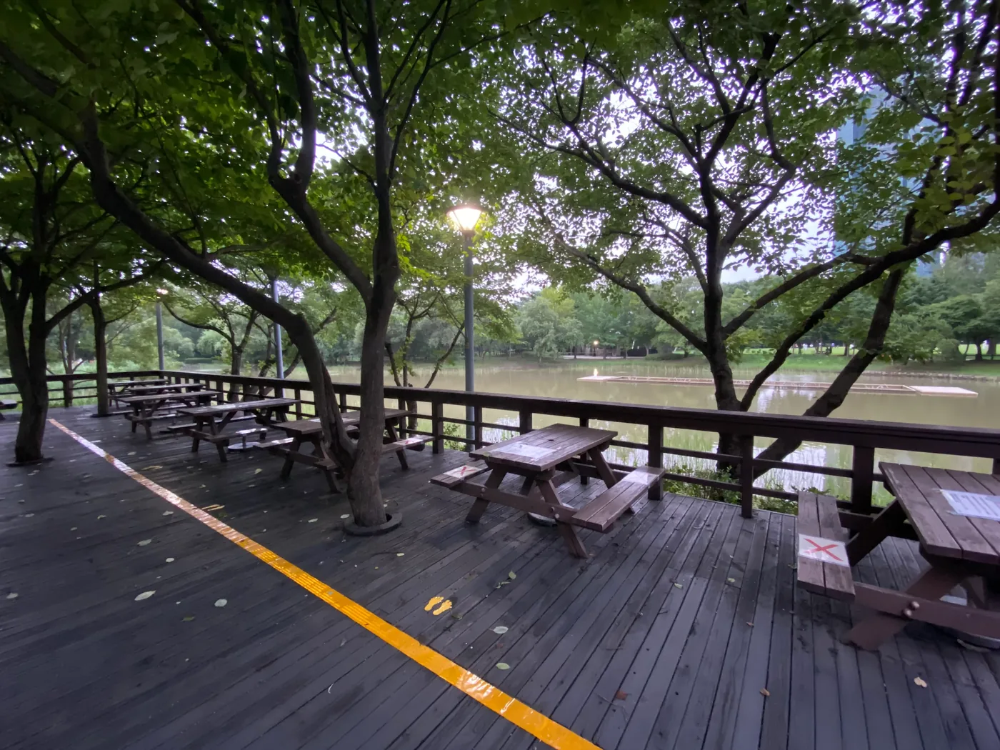

聖水旅遊指南 2026
聖水是首爾最容易把行程排錯的街區之一。

半年前收藏的咖啡廳可能還在，隔壁的快閃店卻可能下週就結束。上午看起來安靜的街道，下午過半就可能擠滿人；原本打算停留 20 分鐘的地方，若還沒想清楚值不值得就跟著排隊，也可能耗上一小時。
逛聖水時，可以把這個街區分成兩個層次來安排。
以長期營業的地點安排主線，再把快閃店當作可調整的部分。
先安排當初吸引你來聖水的街道、常設店鋪、美妝空間、工業建築或首爾林。
再確認實際旅遊日期有哪些活動。
按這個順序安排，就不會在這個緊跟潮流的街區，花上一整天追逐早已過期的 Instagram 貼文。
聖水真正值得逛的是什麼
聖水的魅力，在於同一個街區裡並存著幾種不同面貌的首爾。
製鞋工坊、工廠建築、倉庫與工業街道，仍留著舊時的模樣。
時尚、美妝、咖啡廳、旗艦店、設計與短期品牌活動，則為這些空間帶來新面貌。
這種交融，比任何一家知名咖啡廳更能代表聖水。
聖水至今仍將舊製鞋廠痕跡、工業建築與現代店鋪、藝廊、快閃店融為一體。聖水手工鞋街也仍是持續運作的製造業街區，而不只是地圖上保留下來的歷史名稱。
喜歡邊走邊發現，才適合安排聖水
對喜歡散步時發現新事物的旅客來說，聖水更有吸引力。
出發前先定好兩三個必去地點，仍能留些時間給當天下午才發現的地方。
這和逛宮殿不同；宮殿行程通常在離開飯店前，就已經知道主要目的地。
在聖水，街道本身一直在變。
兩家常設店鋪之間，可能就有新美妝上市活動、時尚聯名或小型展覽。
能隨時調整行程，也是這裡的魅力。
這裡尤其適合逛時尚與美妝
聖水早已不只是首爾的倉庫咖啡廳街區。
OLIVE YOUNG N Seongsu 現在就在聖水站附近營業，除了購物，也提供肌膚與頭皮諮詢、膚色分析及輪替快閃活動。目前店址距離聖水站 4 號出口約 100 公尺，營業時間為 10:00–22:00。
如果你不只想買產品，也想看看韓國美妝品牌現在如何呈現自己，聖水就很適合。
時尚也有類似的情況。
大型常設空間、韓國品牌、國際品牌旗艦店與短期聯名活動，全都集中在街區裡相對不大的範圍，爭取你的目光。
想按固定清單跑景點，這裡就比較不合適
如果你喜歡的旅遊方式是：
景點 A → 景點 B → 景點 C
逛聖水可能會覺得效率不高。
排隊可能打亂時間，快閃店可能需要預約，原本預計逛 30 分鐘的店，也可能五分鐘就看完。
甚至到了現場才發現，這些地方都沒那麼吸引你。
這在聖水很正常。
解法不是排出更複雜的清單。
而是少安排一些非去不可的地點。
聖水不一定要排滿一整天
對許多初次造訪的旅客來說，好好逛半天就夠了。
走走工業街道，挑幾家店鋪或美妝空間，喝杯咖啡，再到首爾林一帶收尾，就能感受聖水，不必把行程變成耐力賽。
如果你對時尚、韓系美妝、設計或快閃店特別有興趣，才比較值得排一整天。
若不是，聖水可以是首爾旅程的一部分，不必成為整趟旅行的重心。
先看你實際有多少時間
低估閒逛所需的時間，最容易讓聖水行程排得太滿。
地圖上的距離看起來未必遠。
真正花時間的是不斷停下來。
一間快閃店、一間化妝品店、一間旗艦店，再加一間咖啡廳，就可能不知不覺用掉大半個下午。
如果大約有三小時
以聖水的其中一側為主。
以潮流為主的路線可以是：
聖水站 → 聖水聯武場街 → 一兩間店鋪或快閃店 → 咖啡廳或用餐
以公園為主的路線可以是：
首爾林 → 附近街道 → 一間旗艦店或咖啡廳
三小時不足以認真追快閃店、逛好幾個美妝空間、排人氣咖啡廳，再悠閒地散步逛首爾林。
總得有所取捨。
如果有半天
第一次來，半天最容易安排。
時間足夠感受聖水的特色，也不用每一站都匆匆走過。
實際可行的節奏是：
聖水站 → 聖水聯武場街 → 挑幾間店鋪／快閃店 → 好好休息 → 繼續往首爾林
重點是「挑幾間」。
別因為十家店都走得到，就把它們全部列入清單。
挑符合興趣的地方，其餘的等實際經過時，再決定是否值得停下來。
如果有大半天
行程就能更從容一些。
你可以多花點時間逛美妝或時尚店鋪，選一間真正想去的咖啡廳，了解一些工業背景，也讓首爾林成為好好休息的地方，而不是最後匆匆拍照的一站。
這樣也比較有餘裕安排快閃店。
即使某個短期活動要排隊或分時段入場，也不會讓整天行程失去彈性。
不過，就算有一整天，也沒必要去遍每個熱門地點。
時間多，應該換來更多彈性。
而不是更長的清單。
週末需要重新估算時間
平日人少時只需 20 分鐘的地方，門口一旦排起隊，可能就要花上更久。
短期快閃店、新開旗艦店與社群爆紅的咖啡廳，尤其容易如此。
如果有一個你真的很想去的地方，就安排早一點。
可去可不去的地點留到後面。
逛聖水最不值得的時間花法，就是只因看到別人在排隊，便為原本毫不在意的東西等上一小時。
聖水不只能逛店鋪和快閃店。街區裡一些值得參加的活動，讓你動手做、親自試或深入了解某件事，而不只是多提一袋東西。
代價是時間。一旦預約了固定場次，它就會成為當天行程的主軸之一。請用它取代另一段逛旗艦店或快閃店的時間，不要再塞進已經排滿的路線。
通常預約一項體驗就夠了
保養課程、個人色彩分析或香水工作坊，都各有適合的理由。
但三項全排，通常就太多了。
挑最符合你原本來聖水目的的一項，再讓其他行程保留彈性。

從哪裡開始：聖水站還是首爾林？
進入聖水，沒有唯一正確的起點。
適合的出發點，取決於你想先感受街區的哪一面。
想先逛潮流店鋪，就從聖水站開始
對多數第一次來、想逛街、看快閃店、美妝與工業街道的旅客而言，聖水站是最容易安排的起點。
目前資料標示，聖水聯武場街距離 3 號出口約 533 公尺，OLIVE YOUNG N Seongsu 則距離 4 號出口約 100 公尺。
從這裡出發，就靠近聖水常設商店與短期零售活動最密集交錯的區域。
接著可以逐漸往西、往南走，不必先從公園出發，又為了逛店鋪反覆折返。
想先逛公園，就從首爾林開始
如果首爾林是你來這裡的主要原因之一，就把順序倒過來。
趁體力與天氣都適合時，先從公園這側出發。
再往聖水商業活動較密集的街道移動。
如果你希望行程從悠閒逐漸走向熱鬧，這樣安排特別合適。
前半段可以在公園享受戶外空間。
後半段再逛街、喝咖啡。
別只因為站名，就橫越整個街區
很容易因為街區叫聖水，就以為來這裡的人都該從聖水站出站。
這就像認為每次逛明洞都必須從明洞站開始一樣，未必實用。
先看你實際安排的行程。
如果第一個重要目的地在首爾林附近，就從那裡開始。
如果收藏的地點多半在聖水聯武場街與聖水站附近，就從那一側開始。
地鐵只是進入街區的方式。
它不該決定整個行程。
一路往前走，比反覆折返更順
第一次來，可以採用這個簡單順序：
聖水站 → 聖水聯武場街 → 挑幾間旗艦店／快閃店 → 咖啡廳或用餐 → 首爾林
如果公園比較重要，反方向也可以。
這兩種都比下面這樣順：
車站 → 店鋪 → 公園 → 回去逛店 → 另一間咖啡廳 → 再往公園走
別只因為地圖上看起來集中，就這樣來回安排。
聖水適合步行。
但反覆走回頭路，仍然會消耗時間與體力。
散步前，先認識聖水聯武場街
想了解今日聖水的樣貌從何而來，聖水聯武場街是很好的起點。
這條街不只是一排潮流店鋪。
舊製鞋廠與工業建築的痕跡，如今與咖啡廳、藝廊、服飾店和品牌快閃店並存。短期活動會更替，造訪前請確認快閃店的實際活動日期。
這幾乎就是聖水的縮影。

把這條街當作串連路線的主軸，不必逐店打卡
你不需要走進聖水聯武場街上的每一家店。
用這條街串起真正想去的地方就好。
如果有新店吸引你，就進去看看。
如果某個沒聽過、也不感興趣的品牌前排著隊，繼續往前走即可。
人潮可以提供線索。
但不代表你一定要跟著排。
除了品牌，也看看建築
聖水有一部分魅力，來自空間本身。
挑高天花板、裸露紅磚、舊工廠的尺度與倉庫格局，並不是為觀光客憑空設計的裝飾風格。
它們來自這個街區的工業歷史。
手工鞋街等地方仍看得到這段歷史，較新的零售空間也刻意保留舊建築的一部分。
例如 Musinsa Store Seongsu @ Daelim Changgo，就保留了歷史悠久的Daelim Warehouse（大林倉庫）結構，沒有改成一般商場的室內模樣。
因此，同一個品牌在聖水的店鋪，可能和百貨公司裡的感受很不一樣。
建築本身就是體驗的一部分。
分清長期地標與短期活動
分清這兩者，可以省去不少行程安排上的麻煩。
聖水聯武場街會一直在。
Daelim Warehouse（大林倉庫）是這個街區長久以來的一部分。
製鞋業的歷史也不會下週就消失。
但另一棟建築裡的品牌裝置，可能在你的班機落地前就撤展。
以第一類地點安排主線。
再用第二類活動調整當天的內容。
允許自己更改計畫
在聖水，臨時改行程往往才是正確決定。
你可能遇到比收藏店鋪更有興趣的快閃店。
也可能發現咖啡廳的排隊時間，長到不值得。
或是比預期晚到首爾林，覺得停留 40 分鐘就夠了。
這不代表行程失敗。
而是你按照聖水實際的節奏，調整了逛法。
快閃店：看活動日期，別照舊清單跑
快閃店讓聖水一直保有新鮮感。
但它們也是聖水行程裡最容易安排失誤的部分。
上個月影片介紹的店，現在可能已經撤了。收藏的聯名活動，可能在你抵達前兩天結束。另一個活動雖然還在，卻可能需要預約、登記候位或依時段入場。
真正該問的不是：
「聖水有哪些最值得去的快閃店？」
而是：
「我去的日期有哪些活動真的有開？我有沒有興趣到願意花時間去？」
安排路線前，先確認活動日期
以常設地點安排不受活動檔期影響的主線。
接近出發日期時，再查當期快閃店。
每個活動都要確認：
- 開始與結束日期
- 每日開放時間
- 預約或候位規則
- 是否免費入場
- 主要是購物、展覽，還是互動體驗
收藏的漂亮貼文，未必會告訴你這些資訊。
有些快閃店是活動，不只是臨時商店
有些聖水快閃店，即使你不是為了購物而進去，也值得花時間。依活動而定，裡面可能有產品試用、遊戲、拍照區、試用品、DIY 或限定商品。這時，快閃店本身就是當天的一項活動。
這會影響時間安排。隨意逛十分鐘，和分時入場、裡面又有多項體驗的活動，不該留一樣長的時間。如果快閃店需要預約或設有多個體驗區，就留出完整時段，並用它取代另一站購物行程。
如果裡面主要是拍照牆，以及你不感興趣的品牌周邊，繼續往前走就好。有互動形式，不代表一定值得花時間。
先看興趣，再決定排不排
長長的人龍，可能讓活動看起來比實際更重要。
但這不是加入隊伍的好理由。
如果是你原本就喜歡的品牌、藝術家、角色或產品，等一下也許值得。
如果看到外面排了 80 個人之前，你完全沒興趣，就繼續往前走。
排隊人潮只能說明它很熱門。
不能說明它值得花掉你在首爾的一小時。
一間真正喜歡的快閃店就可能夠了
聖水可能同時有很多短期活動。
想全部收集，只會把逛街行程變成一張預約時間表。
對多數旅客來說：
一間真正感興趣的快閃店 ＋ 常設店鋪 ＋ 咖啡廳或用餐 ＋ 首爾林
比單純因為剛好有開，就連跑五間快閃店更好。
短期活動應該取代部分原有路線。
不該再額外疊上去。
保留備案
短期活動還有一個問題：計畫可能臨時改變。
快閃店可能提早結束、限定商品售罄，或人潮多到不值得等。
先想好遇到這種情況要做什麼。
在聖水，這並不難。
走去下一家常設店鋪、吃午餐、往首爾林移動，或繼續沿聖水聯武場街散步都可以。
快閃店撲空，應該只損失 10 分鐘。
而不是整個下午。
聖水逛街：值得納入行程的常設旗艦店
逛聖水時，先分清哪些地方有長期值得造訪的理由，哪些只是當週話題，行程會更好安排。
目的不是列出更長的購物清單。
而是為當天安排幾個可靠的重點。
HAUS NOWHERE 把零售空間設計成一場體驗
HAUS NOWHERE SEOUL 不只適合想買眼鏡的旅客。
Gentle Monster 目前位於纛島路 433 號的旗艦店，每天 11:00 至 21:00 營業。
更值得注意的是，這個空間如何把零售、設計與裝置融為同一種體驗。
對這類空間設計有興趣，再安排造訪。
如果沒興趣，不必只因建築拍起來好看就一定要去。
在聖水，這是很重要的取捨。
視覺上很精彩的旗艦店，也可能和你的旅程毫無關係。
Musinsa 呈現聖水的另一面
Musinsa Store Seongsu @ Daelim Changgo 沿用歷史悠久的Daelim Warehouse（大林倉庫）結構，沒有用一般零售裝潢把它遮起來。
保留下來的倉庫結構、挑高天花板與寬敞賣場，本身就是店鋪的一部分。
因此，這裡適合兩種旅客：
對韓國時尚有興趣的人，
以及想看聖水如何把舊工業建築轉為新商業空間的人。
如果兩者都不在意，它就只是另一家店。
如果兩者都有興趣，一站就能滿足兩種目的。

常設店鋪也持續在變
聖水一直有新的大型常設零售空間進駐。
例如 Musinsa Mega Store Seongsu 開幕時，就以規模更大的時尚與美妝空間，結合購物和空間體驗。
所以，那些舊的「聖水必逛五家店」文章很容易過時。
常設店鋪的變化比快閃店慢。
但不代表不會變。
依興趣挑旗艦店
可以這樣篩選：
時尚
挑一個大型時尚空間。
設計／空間體驗
挑建築或裝置最吸引你的旗艦店。
美妝
參考專門的韓系美妝段落，不必把每一家美妝店都加進購物清單。
特定品牌愛好者
直接去那個品牌。
對多數旅客來說，一兩間各有不同造訪理由的旗艦店就夠了。
每個大型空間都有不同的安排理由，聖水行程就會更有意思。
想慢下來創作一小時，可以體驗調香
聖水的香氛與設計文化，也很適合搭配香水工作坊。
目前的工作坊讓旅客花大約一小時到一個半小時，調出專屬香氣；部分也透過教學引導支援多種語言。
如果你想帶回親手在聖水製作、有個人意義的東西，這會比再多逛一間旗艦店更合適。
聖水韓系美妝：Olive Young N 還是 AMORE？
韓系美妝如今是國際旅客搜尋聖水最明確的原因之一。
重點不是哪家店「比較好」。
OLIVE YOUNG N Seongsu 和 AMORE Seongsu 滿足的是不同需求。
應該依這個差別，決定時間花在哪裡。
OLIVE YOUNG N 適合廣泛探索
OLIVE YOUNG N Seongsu 距離聖水站 4 號出口約 100 公尺，目前營業時間為 10:00 至 22:00。
這裡不只有一般商品貨架：目前服務包括肌膚與頭皮諮詢、膚色分析、退稅協助，以及每月輪替的內容與快閃活動。
如果你想做以下事情，這裡很適合當第一站：
- 認識多個韓國品牌
- 比較不同產品類別
- 了解當前美妝趨勢
- 把購物和檢測或品牌體驗排在一起
如果你早已知道要買哪一項產品，也能在別處買到，就不一定需要把聖水的部分時間，再花在另一間大型商店裡。
部分服務需要事先安排
OLIVE YOUNG N 目前依服務不同，採現場登記或事先預約。
如果肌膚分析或其他諮詢是你造訪的重要原因，出發前請先確認目前的預約方式。
別以為任何時間走進去，都能立刻接受服務。
購物時間可以彈性調整。
特定諮詢服務則未必能。
個人色彩分析，適合用來幫助之後的購物選擇
如果接下來還要買美妝或服飾，預約個人色彩分析可能很值得。
聖水有提供英文服務的個人色彩分析選項，位置也方便串進街區行程。如果分析結果能實際影響你當天稍後挑選的色調、衣服或彩妝，這項體驗就最有價值。
如果你已經知道適合自己的色系，或不打算依結果購物，就比較可以略過。
AMORE Seongsu 步調較慢，也更聚焦
AMORE Seongsu 提供另一種美妝體驗。
這個空間設有美妝圖書館，提供超過 1,000 種 Amorepacific 產品，另有潔顏室與花園休憩區。
目前週二至週日 10:30–20:30 營業，週一公休。
如果你想花時間試用、探索同一集團的美妝系列，而不是快速逛過大型多品牌賣場，這裡會更合適。
可以用這個差別來選：
OLIVE YOUNG N → 選擇廣、多品牌、趨勢與探索
AMORE Seongsu → 慢慢試用、單一集團的美妝系列與體驗
不一定兩家都要去。
美妝只是當天一部分時，選一家就好
如果你特別喜歡韓系美妝，兩家都去可能很合理。
如果美妝只是你想在聖水做的六件事之一，就選一家。
重視選擇多樣性，就去 OLIVE YOUNG N。
比較喜歡慢慢體驗產品，就去 AMORE。
再留足夠時間給時尚、工業街道、美食或首爾林。
目的不是證明自己去過每個知名美妝空間。
比起再逛一家化妝品店，動手做保養品更能體現聖水的特色
如果韓系美妝是你選擇聖水的原因之一，也想做些不只是比較貨架上產品的事情，親手製作保養品的課程就很適合。
聖水目前有些體驗會讓你檢測肌膚、挑選合適的潔顏系列，再製作或包裝自己的保養產品。這讓美妝行程的一部分成為動手體驗，而不是繼續逛商品。
如果你寧可親手做一項產品，也不想花同樣一小時再逛另一家大型美妝店，就選這種體驗。
聖水咖啡廳：選一家，不必連跑五家
聖水的知名咖啡廳多到足以排滿整個行程。
如果你就是為了咖啡廳而來，這樣當然沒問題。
對其他人來說，一次舒服的咖啡休息，通常比逐家打卡更有用。
安排時，先想清楚咖啡廳在當天行程中扮演什麼角色。
有理由，再選這家咖啡廳
值得造訪的理由有好幾種。
想看建築
Daelim Warehouse（大林倉庫）這類地方值得安排，是因為改造後的工業空間，能幫助你了解現在的聖水。
想吃特定餐點
如果你真的對某間麵包店或某道甜點有興趣，就為了它而去。
需要休息
這往往就是最好的理由。
逛完兩三家店和一間快閃店後，坐下來休息一小時，可能比再追另一個熱門地點，更能讓接下來的行程舒服。
只有真正想去那家咖啡廳，才值得等
如果那家咖啡廳本來就是你來聖水的原因之一，再排隊。
如果只需要一杯咖啡和一個座位，多走一個街口就好。
聖水不缺咖啡。
連跑咖啡廳，也有看不見的時間成本
五間咖啡廳，不只是五杯飲料。
還意味著：
找路、排隊、點餐、坐下、再次移動，並反覆思考下一家是否值得。
這些過程可能吃掉行程表上原本看似空白的好幾個小時。
如果咖啡廳是你來首爾最主要的興趣，就以它們安排當天行程。
如果不是：
有目的地選一家咖啡廳 → 繼續逛街區
通常是更好的安排。
在首爾林前，或最密集的購物行程後休息
休息時機，比咖啡廳排名更重要。
可以這樣安排節奏：
聖水站 → 聖水聯武場街 → 逛街／快閃店 → 咖啡廳 → 繼續往首爾林
或是：
首爾林 → 散步 → 咖啡廳 → 走進聖水較熱鬧的區域
咖啡廳就成為街區兩種不同節奏之間的轉換點。
這比只因 TikTok 上出現過一杯拿鐵，就橫越聖水更實用。
為什麼舊工廠與製鞋工坊仍然重要
了解快閃店出現以前這裡是什麼地方，就更能看懂現在的聖水。
這個街區一開始並不是時尚區。
過去數十年，聖水與製造業、工坊，尤其是製鞋業密不可分。
比起熱門咖啡廳清單，這段歷史更能解釋今天的聖水。
工業建築不只是裝飾
寬闊樓層、挑高天花板、磚牆與舊倉庫結構，讓聖水擁有能重新作為咖啡廳、商店、展覽與品牌裝置的空間。
因此，聖水許多新空間的感覺，都和一般商場店鋪不同。
建築原本的樣貌，往往仍清楚可見。
時裝店可能仍像一座倉庫。
咖啡廳也可能保留先前工廠的空間尺度。
工業歷史已成為今日設計語彙的一部分。

製鞋業仍在這裡
別把手工鞋街當成早已停工多年的博物館街區。
今天，這裡仍有設計、開發、製造與銷售活動。
所以，即使不打算訂製鞋子，這個區域也值得認識。
它能解釋，為什麼鞋類至今仍在聖水的零售特色中占有重要位置。
甚至在新店裡，也看得到這種連結。
舊聖水與新聖水，不是兩段完全分開的故事。
彼此一直在互相取材。
不需要特地參加歷史導覽
這一節不是要你花兩小時研究工業遺產。
實際的用處很簡單。
沿聖水聯武場街散步，或走進改造倉庫時，除了裡面的品牌，也看看建築。
只要多知道一點背景，這個街區就會從：
「有很多時尚店鋪的地方」
變成：
「正在持續轉型、重新利用的舊製造業街區」。
這也是更有意思的造訪理由。
看看舊街區，讓行程不只剩追潮流
快閃店會結束。
品牌會更替。
社群爆紅的咖啡廳，可能很快就退燒。
聖水工業建築的變化，卻慢得多。
所以，這部分值得放進不受短期潮流影響的指南主線。
即使當週的短期活動都不吸引你，仍有值得了解的內容。
到首爾林換個步調
首爾林不只是購物後順便加上的另一個景點。
它最適合扮演的角色，是讓聖水行程徹底放慢步調。
在狹窄街道、店鋪與排隊人潮中待了幾小時後，這樣的開闊尺度格外有感。
真正需要換個環境時，再去公園
可以採用這個順序：
聖水聯武場街 → 逛街／快閃店 → 咖啡廳或用餐 → 首爾林
到了公園，它的價值就不只是地圖上又一個打卡點。
而是空間。
你可以散步，不必再走進商店。
可以坐下，不必再點一杯飲料。
也可以想想，接下來是否還想繼續逛聖水。
因此，公園特別適合安排在下午最熱鬧的商業區行程之後。

不必走完整座公園
首爾林很大，不適合只當成匆匆完成的一項清單。
如果只有 30 或 40 分鐘，挑一區走走，享受環境轉換就好。
如果天氣好，而公園也是你的重點之一，就多留一點時間。
把所有步道都走過，不會讓半天的聖水行程變得更好。
依當天需要，逛適合的範圍就好。
這一段路線應該看天氣調整
天氣舒服時，首爾林更值得停留。
春秋晴朗的午後，很適合留一段較長的休息時間。
遇到大雨、悶熱或難耐的低溫，勉強長時間逛公園，收穫就很有限。
這時可以縮短或取消公園行程，把時間留給吃飯、購物或其他室內地點。
逛公園的意義，在於舒服愉快。
不是因為它曾經寫在原本的行程表上。
2026 年多了一個留意公園活動的理由
2026 首爾國際庭園博覽會預定持續至十月 27 日 ，首爾林是主要活動區域之一。
這應歸在當期資訊，而不是長期適用的行程主線。
如果旅遊日期正好重疊，就多了一個在公園停留更久的理由。
活動結束後，首爾林仍保有原本的角色。
短期活動會改變造訪體驗。
但公園的價值並不由它創造。
聖水附近吃什麼：好好吃一餐，不只是再吃一道甜點
聖水行程可能不知不覺變成：
咖啡 → 麵包甜點 → 快閃店 → 另一杯咖啡 → 甜點
如果當天就是為了咖啡廳而來，這樣沒問題。
但如果最後還是想好好吃一頓韓式料理，就在大家同時餓了之前，先決定。
聖水也有較老的飲食傳統；如果每篇推薦都從麵包店開始，就很容易錯過。
想好好吃頓簡單的飯，可以考慮馬鈴薯排骨湯
Somunnan Seongsu Gamjatang 就是一個實用例子，因為它解決的是吃飯需求，而不是再增加一站潮流打卡。
餐廳 24 小時營業，也設有單人用餐座位。
這讓它適合：
- 想好好吃一餐的獨旅者
- 購物後較晚吃的午餐
- 當天行程已經很彈性時的晚餐
- 已經吃膩咖啡廳餐點的人
不必只因為它有名，就非吃不可。
如果你覺得排隊時間不值得，聖水還有其他餐廳。
烤肉巷屬於另一個面貌的聖水
聖水洞烤肉巷在 1970 年代隨著當地賽馬場人潮發展，至今仍有豬肋排餐廳。
這把飲食故事連回較早的街區生活，而不是如今的快閃店商業活動。
如果同行的人適合坐下來吃烤肉，就可以選這裡。
如果是一個人、時間不多，或晚點已經安排另一頓豐盛餐點，這裡就比較不合適。
必要時，讓午餐決定下午的節奏
吃飯不一定要硬塞在店鋪行程之間的小空檔。
如果抵達時已經餓了，就先吃。
舒服地吃一頓飯，可能比堅持原本隨意排好的購物順序，更能讓接下來三小時走得盡興。
同樣地，如果預約了定時入場的快閃活動或諮詢，就安排在預約前或後用餐，不要在中間匆匆吃一頓。
固定時段的行程，應該決定彈性行程怎麼安排。
咖啡廳餐點與正餐，解決的是不同需求
如果只需要休息，一份麵包甜點可能就夠。
如果你真的喜歡甜點，甜點咖啡廳本身也可以是目的地。
一碗湯、烤肉或其他正餐，則是用來填飽肚子。
別讓它們搶同一個角色。
第一次來，可以採用這樣的節奏：
在別處吃簡單早餐或午餐 → 聖水購物 → 咖啡廳休息 → 稍後吃正餐
或是：
在聖水吃午餐 → 購物／快閃店 → 首爾林 → 離開前喝咖啡
重點不是照著某個固定順序走。
而是避免到了晚上 7 點，才發現大家已經吃了四道甜點，卻還需要晚餐。
實際走起來順的路線
聖水不需要一條唯一完美的路線。
它需要適度安排，讓你不必反覆折返；也要有足夠彈性，讓臨時發現的活動能改變當天計畫。
對多數旅客來說，幾種版本就夠用了。
路線 1 — 約三小時：重點式聖水行程
當聖水只是首爾一日行程的一部分時，可以用這條路線。
聖水站 → 聖水聯武場街 → 一個購物重點 → 一間咖啡廳或一餐
購物重點可以是：
- 一間時尚旗艦店
- OLIVE YOUNG N
- AMORE Seongsu
- 一間當期快閃店
選一個就好。
一旦開始逛店和排隊，三小時很快就過了。
這條路線不適合塞進五家店、兩間咖啡廳和首爾林。
路線 2 — 半天：初次造訪的基本安排
對許多第一次來的人來說，這是最合適的版本。
建議時間安排 — 約 6 小時
-
上午 11:00 — 從聖水站 3 號出口開始
在聖水商業區開始全面熱鬧起來的時候出發。
前段先逛聖水聯武場街與購物較密集的區域，不必一開始就橫越街區。
-
上午 11:10–下午 12:30 — 聖水聯武場街＋一兩個真正想去的地點
先走聖水聯武場街。
依你原本的興趣，挑一兩個時尚、美妝、設計空間或當期快閃店。
別只因為有人在等，就跟著排隊。
人潮可以提供線索，但不代表你一定要跟著排。
-
下午 12:30–1:30 — 好好吃午餐
在整天只剩咖啡、麵包甜點和購物袋之前，先停下來。
在路線附近找一頓正餐，把這一小時當成真正的休息。
-
下午 1:30–2:30 — 選一個購物重點
把這一小時留給一項主要興趣。
美妝、時尚、設計旗艦店或某個特定品牌，都可以占用這段時間。
不必想著把聖水每家主要店鋪都逛完。
-
下午 2:30–3:20 — 一間咖啡廳
因為喜歡建築、餐點，或只是需要坐下來，而選一家咖啡廳。
如果咖啡廳就是你來的主要原因，可以待久一點。
否則，好好休息一次就夠了。
-
下午 3:20–3:50 — 往首爾林移動
讓路線持續朝同一個方向前進。
除非某間收藏店鋪真的比剩下的下午更重要，否則不必再往聖水站折返。
-
下午 3:50–5:15 — 在首爾林收尾
逛了幾小時的店鋪、街道，又排過隊之後，到公園換個步調。
你不必走完整座公園。
散散步、坐一會兒，給自己一點開闊空間，再決定聖水行程是否到此結束。
-
下午 5:15 之後 — 留下吃晚餐，或前往下一站
如果還想多感受聖水，就留下吃晚餐。
如果晚上另有其他街區的安排，就從首爾林這側離開。
別只因比預期早走完路線，就再加一間旗艦店。
聖水站 → 聖水聯武場街 → 挑幾間店鋪／快閃店 → 咖啡廳或正餐 → 繼續往首爾林
路線從較密集的商業區開始，以較開闊的空間結束。
當天行程就有自然的節奏變化。
如果特別想去某個快閃活動，就用它取代一站購物。
如果沒有短期活動吸引你，這條路線仍然成立。
這就是重點。
路線 3 — 先逛公園
天氣好，而且你更重視首爾林、不急著看最新開幕店鋪時，可以用這條路線。
建議時間安排 — 約 6 小時
-
上午 9:30 — 從首爾林站開始
趁聖水商業區還沒完全醒來，先逛首爾林。
如果公園本來就是你來這裡的原因之一，而不是想在購物後硬塞進去的一站，這條路線最合適。
-
上午 9:40–11:00 — 首爾林
留大約 80 分鐘給公園。
你不必走完整座公園。
走一段能享受開闊空間的路，想坐就坐，趁購物街還沒熱鬧起來，享受較安靜的早晨。
-
上午 11:00–11:30 — 慢慢走進聖水
店鋪與旗艦店開始營業時，往街區的商業區走。
感受沿途街景的轉變，不必把這段路只當成無聊的移動時間。
-
上午 11:30–下午 12:30 — 午餐或一間好好休息的咖啡廳
依肚子餓不餓來決定。
如果需要吃正餐，現在就吃。
如果早餐吃得晚、只是需要休息，就把這段當作當天的咖啡廳時間。
不必自動把兩者都排進去。
-
下午 12:30–1:30 — 選一個常設重點
挑一個即使本週熱潮退去，也仍有造訪理由的地方。
可以是一間時尚旗艦店、一個以設計為主的空間、一處韓系美妝地點，或你原本就想看的特定品牌。
選一個就好。
-
下午 1:30–3:10 — 聖水聯武場街＋一間有興趣的當期快閃店
接著在一天較熱鬧的時段，逛主要商業街道。
看看當期快閃店，但只把時間留給真正符合你興趣的活動。
如果沒有，就把時間留給常設店鋪與街區本身。
-
下午 3:10–3:30 — 往聖水站方向收尾
走到這裡，你已經逛了公園、吃一餐或喝咖啡、看過一個常設重點，也走了聖水主要街道。
第一次來，這樣就很充實。
從聖水站離開，或到這時再判斷，是否還有另一站真的值得多留時間。
首爾林 → 附近街道 → 咖啡廳或午餐 → 常設旗艦店／韓系美妝 → 聖水聯武場街 → 聖水站
這個版本會隨著時間推進，越走越熱鬧。
如果想先安排戶外活動，或晚點的行程本來就比較靠近聖水站，這樣走很合適。
不必只因為經過，就把每一個商業地點都逛完。
路線 4 — 以時尚與韓系美妝為主
如果購物就是這次造訪的主要目的：
聖水站 → OLIVE YOUNG N 或 AMORE → 一間主要時尚／設計旗艦店 → 有興趣的當期快閃店 → 用餐 → 視情況逛首爾林
如果預約了固定時段的美妝或香氛體驗，就用它取代一站旗艦店或快閃店，不要再額外加上去。
先依想要的美妝體驗，選 OLIVE YOUNG N 或 AMORE。
再依興趣挑一個主要時尚空間。
接著判斷，短期快閃店是否值得用掉剩下的時間。
這條路線即使不加上每家知名咖啡廳，也能逛大半天。
路線 5 — 不逛快閃店
這條路線很重要，因為旅客有時會以為，如果旅遊日期沒有適合的短期活動，聖水就沒什麼好逛。
其實不是。
可以這樣走：
聖水站 → 手工鞋街／認識工業背景 → 聖水聯武場街 → 常設旗艦店 → 用餐 → 首爾林
這條路線沒有任何一站，必須仰賴一個只辦三週的聯名活動。
也是最不容易過時的版本。
Korea Inside 的基本路線
如果不知道該選哪條路線，可以用：
聖水站 → 聖水聯武場街 → 一個購物重點 → 只有真正感興趣才加一間當期快閃店 → 咖啡廳或正餐 → 首爾林
接著就可以結束。
如果還有體力，附近又有想去的地方，再繼續。
如果已經在這裡逛了五小時，聖水行程就很夠了。
目的不是把整個街區全部逛完。
而是離開時，更了解它為什麼會成為首爾最受討論的街區之一。
聖水適合誰，又有哪些人不一定需要安排
聖水夠熱門，容易讓旅客覺得非去不可。
其實不是。
當時尚、美妝、咖啡廳、設計、快閃店或首爾林這些主要特色，至少有一項符合你的旅遊喜好時，這個街區才最值得安排。
第一次來首爾的旅客
適合，但不代表一定要排一整天。
如果在首爾的時間夠多，聖水能讓你看到宮殿與傳統街區之外的城市面貌。
許多人第一次來，半天就夠了。
如果整趟首爾旅行只有兩三天，而重點是宮殿、市場與主要地標，聖水就需要和其他行程比較優先順序，不該自動占去一段時間。
有名，不代表每份行程都必須有它。
喜歡時尚與設計的旅客
非常適合。
在這裡，常設旗艦店、韓國時尚、工業建築與短期聯名活動，會互相增添吸引力。
先挑一兩個真正感興趣的品牌或空間。
再留足夠時間，去發現其他地方。
過於固定的購物清單，反而會少掉聖水的一項優點。
喜歡韓系美妝的旅客
非常適合。
OLIVE YOUNG N Seongsu 與 AMORE Seongsu，已經提供了兩種截然不同的美妝重點。
遇到有興趣的當期美妝快閃店，再加進去。
不需要每一家美妝店都逛。
充實的聖水美妝行程，在於比較不同類型的體驗，不是把購物袋數量增加到最多。
以咖啡廳為主的旅客
很適合。
如果咖啡廳、麵包店與改造工業空間是你的主要旅遊興趣，就很值得留比基本行程更多的時間。
這種情況下，不必遵守「只選一間咖啡廳」。
咖啡廳不再只是休息站。
它本來就是你來的原因之一。
再次造訪首爾的旅客
非常適合。
當你不再急著跑完首爾首次旅行的知名景點，聖水就會更有意思。
可以花一個下午，追尋特定時尚興趣、當期快閃店或新旗艦店，覺得足夠了就離開。
這種較聚焦的目的，往往比第一次來的必去清單更適合聖水。
家庭旅行
有適合的部分，也有需要取捨的地方。
首爾林很適合帶孩子去，大型店鋪或互動快閃店也可能很好玩。
比較辛苦的是商業核心區。
人潮、排隊、接連逛店與咖啡廳的長時間等候，很快就會讓人疲倦。
家庭行程應挑選商業區裡的重點：保留首爾林與一兩個真正想去的地方，在排隊開始主導整天行程前離開。
主要想看傳統韓國的旅客
較不適合。
聖水的魅力來自當代首爾。
如果重點是宮殿、韓屋街區、傳統市場與歷史街道，應先把更多時間留給城市的其他地方。
你仍然可以來聖水。
只是它未必能滿足你來韓國最想看的內容。
不喜歡排隊與追潮流購物的旅客
可能適合縮短停留時間。
這裡仍有工業歷史、美食與首爾林。
但如果擁擠的新店、短期發表活動和社群帶動的熱門地點會讓你煩躁，就沒必要花六小時證明聖水不適合自己。
逛自己喜歡的部分就好。
然後離開。
聖水當期資訊：2026 年九月
查核日期：2026 年九月 11 日
這一節會比指南其他部分更快過時。
這是刻意分開處理的。
一篇舊旅遊文章還在搜尋結果中出現時，聖水可能已經換過好幾輪短期活動。
先從長期適用的路線開始安排。
以下活動，只有在日期與興趣都符合時才納入。
首爾林的首爾國際庭園博覽會
2026 首爾國際庭園博覽會預定在首爾林舉行至 2026 年十月 27 日。
如果九月或十月的路線本來就包含首爾林，這項活動能成為多留一點時間的理由。
不必為了它重新安排其他聖水行程。
活動結束後，公園仍值得造訪。
Spotify House Seoul — 九月 10–13 日
Spotify House Seoul 預定於 2026 年九月 10 至 13 日在聖水舉行。
這個短期場地結合白天活動與晚間現場演出，可能需要預約。
以它安排路線前，先確認當期演出名單與預約方式。
這正是應該取代行程中其他安排的聖水活動。
如果有喜歡的藝人或節目，就留時間給它。
如果沒有，不必只因活動僅有四天就非去不可。
兩個當期美妝快閃活動，適合串進聖水路線
Ma:nyo 的 Soybean Mill 快閃活動，預定於 2026 年九月 9 至 21 日舉行 ，地點在聖水聯武場街，目前公布的每日時間為 11:00–20:00。
BYREDO FUTURE MEMORIES Seoul 預定於 2026 年九月 11 至 20 日舉行 ，地點在聯武場 11 街，目前公布的時間同樣為 11:00–20:00。
兩者都很容易串進聖水的美妝或購物路線。
但不代表兩個都需要去。
依你真正喜歡的品牌或產品來選。
當期資訊，只適用於當期
這次更新後幾天內，有些活動就可能結束。
所以，長期適用的旅遊指南與當期資訊必須分開。
依序問自己：
我實際到訪的日期，活動有開嗎？
我原本就喜歡這個品牌、藝人或體驗嗎？
它值得取代路線裡原本安排的時間嗎？
三個答案都是肯定的？
就加進去。
如果不是？
繼續往前走就好。
聖水變得很快。
你不必跟著急追。
以街區、常設地點與原本的興趣安排當天主線，再用當期快閃店調整其中一兩部分。
有人排隊，不代表你也得排；店鋪正熱門，也不代表你有義務去。
當下一家店、咖啡廳或快閃活動已經不會讓今天更好，就繼續往前走。
反正下次回來時，聖水大概又會不一樣了。